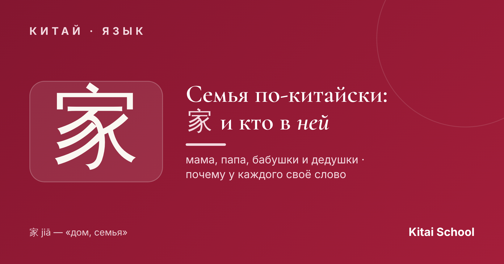
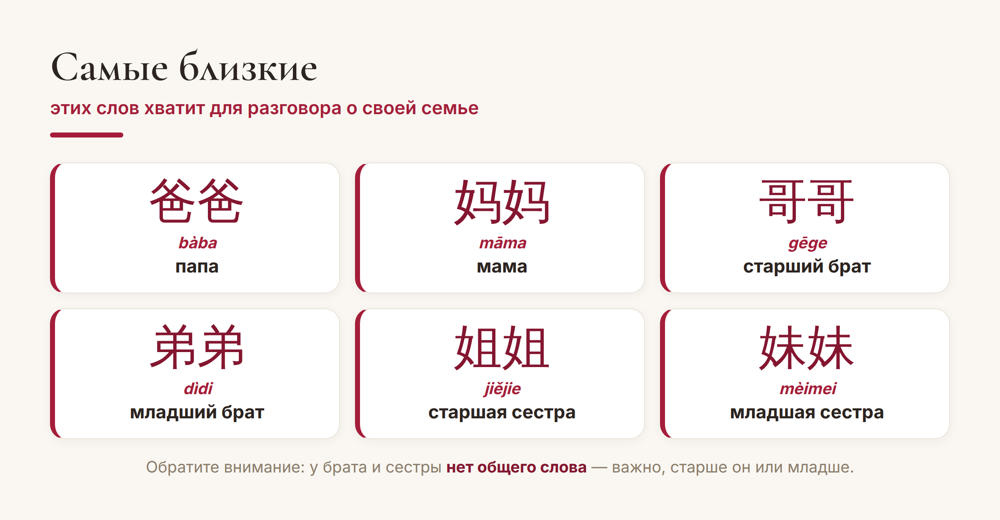
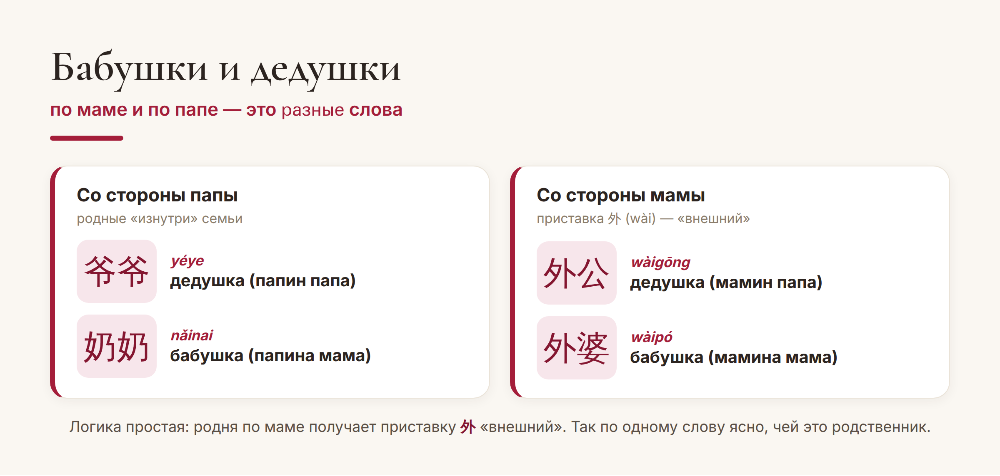

Китай · язык

Семья в Китае — это святое. Недаром слово 家 (jiā) значит сразу и «дом», и «семья»: крыша, а под ней — родные. Но стоит начать называть родственников, и новичка ждёт сюрприз: у китайцев для каждого — своё отдельное слово, и «просто бабушка» или «просто брат» тут не работает.
Разберёмся, из кого состоит китайская семья, почему слов так много и какие из них выучить в первую очередь.
Хорошая новость: чтобы рассказать о своей семье, хватит нескольких слов. И почти все они очень милые — с повтором слога, как детское «мама-папа»:

Здесь же прячется первая важная особенность. У китайцев нет общего слова «брат» или «сестра». Есть 哥哥 (gēge) — старший брат и 弟弟 (dìdi) — младший; 姐姐 (jiějie) — старшая сестра и 妹妹 (mèimei) — младшая. Возраст важнее пола: сначала нужно знать, старше человек или младше.
А вот и главное отличие от русского. В китайском важно не просто «дядя» или «бабушка», а по какой линии — маминой или папиной, и кто старше. Поэтому вместо нашего одного «дедушки» — целых четыре разных родственника с разными названиями.

Логика на самом деле удобная: приставка 外 (wài, «внешний») означает «со стороны мамы». Услышали 外 — сразу понятно, что это мамина родня. Традиционно семья считалась по мужской линии, отсюда и деление на «своих» и «внешних».
С тётями и дядями та же история, только слов ещё больше. Для папиного старшего брата и младшего — разные слова (伯伯 bóbo и 叔叔 shūshu), для маминого брата — своё (舅舅 jiùjiu). Всего в полной системе родства десятки терминов, и китайские дети осваивают их годами.
Не пугайтесь. Всю систему знать наизусть не нужно — даже сами китайцы иногда сверяются со специальными таблицами родства. Для начала выучите близких из первой картинки и бабушек-дедушек. Остальное придёт с практикой, когда появятся конкретные люди, которых надо как-то называть.
И ещё один приятный факт. В Китае родственными словами обращаются даже к чужим — это тепло и вежливо. К пожилому мужчине можно уважительно сказать 大爷 (dàye) или 叔叔 (shūshu), к женщине постарше — 阿姨 (āyí, «тётя»). Так язык превращает весь мир в одну большую семью.
Вот и вся логика: 家 — это дом и семья, а внутри у каждого своё точное слово. Начните с самых близких, добавляйте по одному — и очень скоро вы сможете рассказать о своей семье по-китайски.
Тепла вашему дому! 家和万事兴。